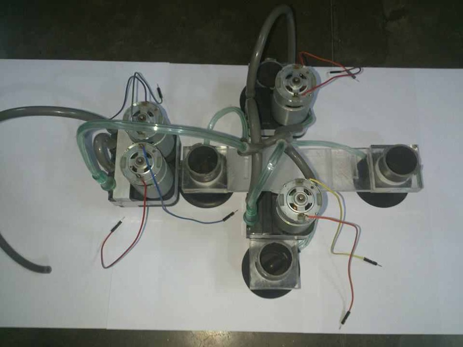
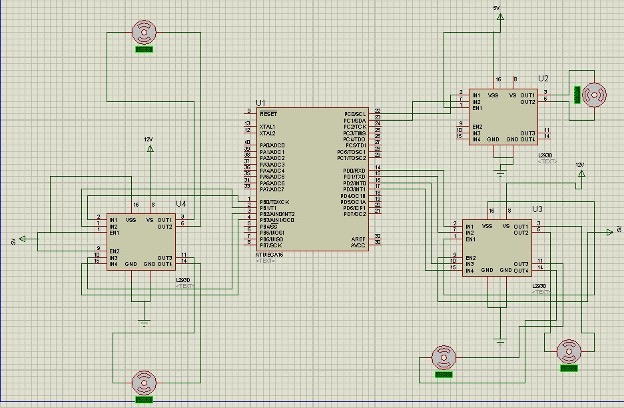
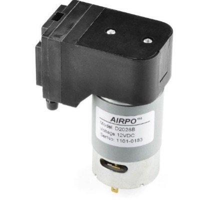
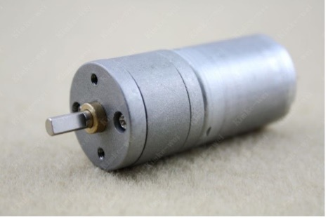
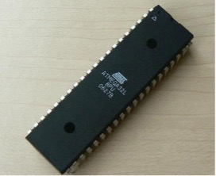

Glass Climbing Robot
Measurement & Instrumentation
Undergraduate Capstone Project | BUET | Group A-12
🏛️ Institution: Bangladesh University of Engineering & Technology (BUET)
👥 Team: Abdullah Al Muti Sharfuddin, Md. Asif Ullah, Azmal Huda Chowdhury, A. S. M. Sayem
📅 Year: 2014
💰 Total Cost: ~11,932 BDT (~$150 USD at the time)


Project Overview
This undergraduate capstone project focused on developing a portable, lightweight glass climbing robot capable of ascending smooth vertical glass surfaces. The robot uses a combination of vacuum suction cups for adhesion and a belt-driven linear motion mechanism for climbing. The project was completed as part of the Measurement & Instrumentation Sessional course (ME 362) at Bangladesh University of Engineering & Technology (BUET).
Project Motivation
Glass-climbing robots are highly valuable for substituting human labor in dangerous and repetitive tasks such as:
- Cleaning glass windows on high-rise buildings
- Maintenance and inspection of industrial storage tanks
- Sensor placement above ground clutter
- High-resolution inspection of vertical surfaces
- Automated mapping of 3D structures and crack detection
My Role & Contributions
- Mechanical Design: Contributed to the design of the crossed-bar mechanism and acrylic bar structure
- Component Selection: Participated in selecting vacuum pumps, gear motors, and suction cups
- Fabrication: Assisted in assembling the mechanical structure and mounting components
- Testing: Participated in prototype testing and validation on vertical glass surfaces
Mechanical Components


Component Specifications:
| Component | Quantity | Specifications |
|---|---|---|
| Vacuum Pump | 4 | 12V DC, creates partial vacuum in suction cups |
| Gear Motor | 1 | 12V DC, high torque at low speed |
| Belt Drive | 1 | Transmits motion to acrylic bars |
| Acrylic Bars | 2 | Square cross-section, one with extended portions |
| Suction Cups | 4 | Mounted at four ends of acrylic bars |
Working Principle of Adhesion:
The vacuum pumps remove air from inside the suction cups, creating a pressure difference. The higher atmospheric pressure outside forces the suction cups to adhere firmly to the glass surface. The robot uses alternating adhesion: when one bar moves upward, its suction cups are loose while the other bar's cups adhere; then they alternate, enabling continuous climbing.
Electrical Components


Component List:
- Microcontroller: ATMEGA32 (8-bit AVR, 32KB Flash, 2KB SRAM, up to 16 MIPS)
- Motor Driver: 3 × L293D H-bridge DC motor controllers
- Voltage Regulator: L7805 (+5V regulator)
- Power Supply: 48W DC power supply
- Development Board: Veroboard for circuit prototyping
Circuit Diagram

Microcontroller Code (C for AVR)
#include <avr/io.h>
#include <util/delay.h>
// Motor control functions
void activate_motor_clockwise(void);
void activate_motor_counterclockwise(void);
int main(void) {
DDRB = 0b00001111; // Configure PORTB for vacuum pump control
DDRD = 0b00001111; // Configure PORTD for motor control
DDRC = 0b00000011; // Configure PORTC for suction cup actuator control
while(1) {
// Activate suction pumps for initial grip
PORTB = 0b00001010;
activate_motor_clockwise();
_delay_ms(10000); // Move forward for 10 seconds
// Deactivate pumps, switch direction
PORTB = 0b00000000;
PORTD = 0b00001010;
activate_motor_counterclockwise();
_delay_ms(10000); // Move reverse for 10 seconds
PORTD = 0b00000000; // Stop all motors
}
return 0;
}
void activate_motor_clockwise(void) {
PORTC = 0b00000010;
_delay_ms(1000);
PORTC = 0b00000000;
}
void activate_motor_counterclockwise(void) {
PORTC = 0b00000001;
_delay_ms(1000);
PORTC = 0b00000000;
}
Working Principle
The glass climbing robot operates on the principle of alternating adhesion and linear motion:
- Initial Grip: Vacuum pumps activate, removing air from all four suction cups, creating pressure differential for adhesion
- Linear Motion (Phase 1): One acrylic bar moves upward via belt drive while its suction cups remain loose; the other bar's cups maintain adhesion
- Stop & Transfer: Moving bar continues until stopped by the extended portion of the stationary bar
- Linear Motion (Phase 2): The other bar now moves upward while the first bar's cups adhere to the surface
- Repeat: The cycle repeats, enabling continuous climbing motion
Mechanical Design Features
- Crossed-bar mechanism: Two perpendicular acrylic bars (one vertical, one horizontal)
- Extended portions: One bar has extended sections that guide and limit the other bar's motion
- Four suction cups: Mounted at the four ends of the acrylic bars for stability
- Belt drive system: Provides linear motion to the acrylic bars
- Lightweight construction: Acrylic material keeps the robot portable
Skills & Technologies Used
Limitations & Recommendations
Current Limitations:
- Only 1 degree of freedom (linear motion only)
- Unable to climb unsmooth surfaces (requires better adhesion mechanism)
- Battery life limited due to weight considerations
- Limited displacement range (constrained by bar length)
Recommendations for Future Work:
- Increase to 2-3 degrees of freedom for more versatile movement
- Use more powerful suction cups for smooth wall climbing
- Implement electro-adhesive technology for unsmooth surfaces
- Add remote control capability for wireless operation
- Integrate sensors for autonomous operation
Cost Analysis (2014, BDT)
| Component | Cost (BDT) |
|---|---|
| Vacuum Pump (4 pieces) | 7,500 |
| Gear Motor | 350 |
| ATMEGA32 Microcontroller | 180 |
| L293D Motor Driver (3 pieces) | 270 |
| L7805 Voltage Regulator | 12 |
| Breadboard | 120 |
| Jumper Wires | 150 |
| Acrylic Sheet | 850 |
| Development Board (Veroboard) | 2,500 |
| Total | 11,932 BDT (~$150 USD) |
Downloads
Connection to My Current Research
This early undergraduate project laid the foundation for my interest in mechatronics and embedded systems, which later translated into:
- Microcontroller programming skills used in my wearable sensor data acquisition systems (Arduino, ESP32)
- Circuit design experience applied to sensor signal conditioning circuits
- Vacuum/pressure systems understanding relevant to my pressure sensor work
- Team collaboration and project management skills
Conclusion
This project successfully demonstrated a functional glass climbing robot prototype using vacuum suction cups for adhesion and a belt-driven linear motion mechanism. The robot was fabricated using acrylic bars, four 12V DC vacuum pumps, a gear motor, and an ATMEGA32 microcontroller for control. The project provided valuable hands-on experience in mechanical design, embedded systems programming (C for AVR), circuit design, and team-based project execution. While the current prototype has limitations (1 DOF, smooth surfaces only), the project successfully proved the concept and laid groundwork for future improvements such as increased degrees of freedom, remote control, and electro-adhesive climbing for unsmooth surfaces.